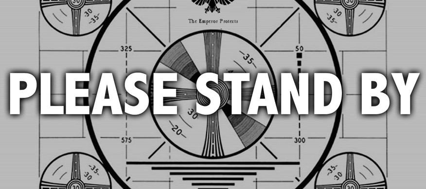
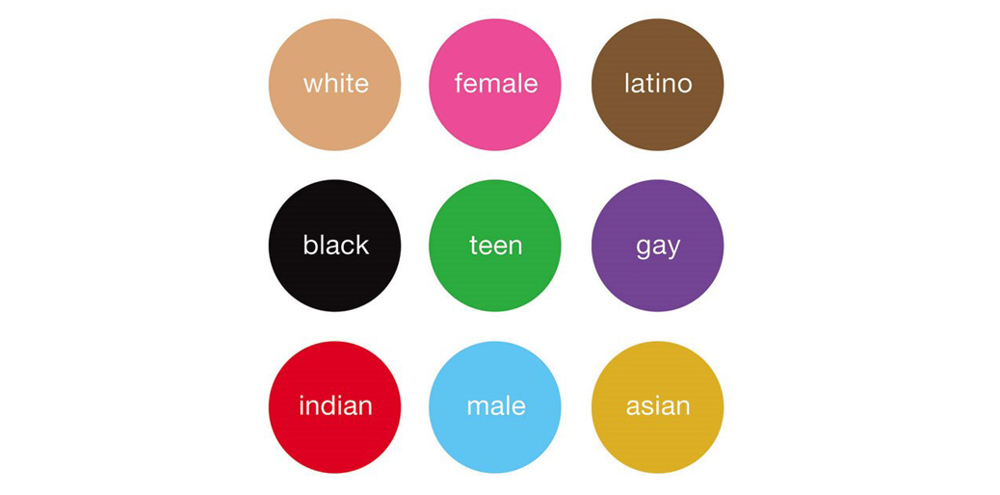
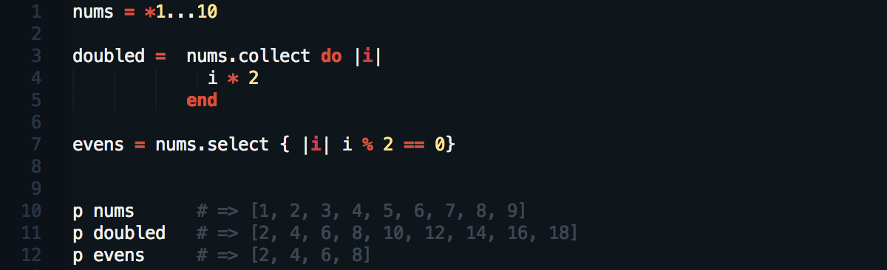

Reaffirming Our Values - A Public Service Announcement
by Ernie Salazar
Posted on June 8, 2014

A few weeks back we looked at a value reflection. In it, I examined a particular value that has had some significance to my life and expounded on its impact. The value in question, was that of public service or being of service to others. I’ve always found joy as well as opportunities to learn when I’ve embraced that value. As I’ve experienced in the last few weeks, that same value can also hold keys to mitigating something we talked about last week, stereotype threat.
cultural, values, stereotype, week 7, phase 0
Read More
SQLite Injection - What could go wrong?
by Ernie Salazar
Posted on June 6, 2014
As far as embedded databases go, SQLite is a popular choice. It’s a relational database management system that follows much of SQL standards. Since it needs no standalone processes, its library communicates and links with the server becoming an inherent component utilized by many web browsers. It’s ACID-compliant (Atomicity, Consistency, Isolation, Durability) and uses a dynamic yet weakly typed syntax. This is where things can begin to go wrong. That syntax doesn’t ensure the domain or database integrity.
technical, sqlite, sql injection, databases, week 7, phase 0
Read More
Examining and Minimizing Stereotype Threat
by Ernie Salazar
Posted on June 1, 2014

The theory of stereotype threat describes the possibility of (often unconsciously) experiencing anxiety that can lead to negative outcomes, when in situations where we believe we may confirm a stereotype about the groups we identify with. While it’s a common held belief today and well studied, it was first introduced in 1995 in the experiments conducted by Psychologists Dr. Claude Steele together with Dr. Joshua Aronson.
cultural, stereotype, week 6, phase 0
Read More
What are Blocks, Procs, and Lambdas?
by Ernie Salazar
Posted on May 30, 2014

As we learn more about Ruby as a programming language, we get to explore the many ways in which we can interact with, alter and change objects. Three dynamic and useful tools towards that end are blocks, Procs and lambdas. Let’s learn a little about each and how we can utilize them in our code.
technical, ruby, code, blocks, week 6, phase 0
Read More
What's Going On
by Ernie Salazar
I recently decided that a career change might be what I needed. After having a successful career in Retail Management, I was hungry for something more. While I don't take the decision to change paths lightly, especially at my age, I knew I wanted to be involved in something that excited me. With so much opportunity and potential ahead, I dove head first into an area that I've always been both interested in and passion about, technology. The future, my future will be in coding, programming and web development and I can't be more exhilarated.
about, san francisco, dev bootcamp
Read More